CoreEngine ゲーム制作 設計書
エディタとスクリプトだけでゲームを作るための仕様と手順をまとめた文書です。
全体の構成
基本の考え方
このエンジンでは、ゲームを作るのに C++ を書きません。やることは 2 つです。
- エディタでオブジェクトを置き、コンポーネントを付ける
- 独自の動きだけをスクリプト（AngelScript）で書く
オブジェクトは器です。 それ自体は何もしません。付けたコンポーネントで中身が決まります。
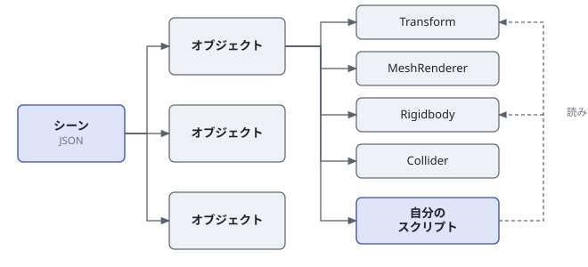
| やりたいこと | 付けるコンポーネント |
|---|---|
| 位置を持たせる | Transform |
| 形を出す | MeshRenderer と Material |
| 落として転がす | Collider と Rigidbody |
| 操作するキャラにする | Collider と CharacterController |
| 独自の動きをさせる | 自分で書いたスクリプト |
考え方は Unity とほぼ同じです。オブジェクトにコンポーネントを足し、スクリプトを 1 つのコンポーネントとして扱う点まで揃えてあります。Unity を触ったことがあれば、名前の違いを覚えるだけで済みます。
データの置き場所
シーンもプレハブも設定も、すべて JSON ファイルです。 ビルドし直さなくても、エディタで変えればその場で反映されます。
Project/
├── Application/
│ ├── Assets/
│ │ ├── Models/ モデル（.obj .fbx .gltf .glb）
│ │ ├── Textures/ 画像（.png .jpg .hdr）
│ │ ├── Prefabs/ プレハブ（.prefab）
│ │ ├── Scenes/ シーン（フォルダ 1 つで 1 シーン）
│ │ ├── Scripts/ スクリプト（.as）
│ │ ├── Physics/ 物理マテリアル
│ │ └── Presets/ 各種プリセット
│ ├── Config/
│ │ ├── EngineSettings/ 起動シーン・入力・レイヤー
│ │ └── ScriptTemplates/ スクリプトの雛形
│ └── Saved/ エディタの状態（レイアウトなど）
└── Engine/ エンジン本体（触らない）エンジンが場所を決め打ちしているのは Assets/Scripts（スクリプトを探す場所）と Assets/Scenes（シーンを探す場所）だけです。その中の並べ方は自由です。
ビルド構成
| 構成 | エディタ | 速さ | 用途 |
|---|---|---|---|
Debug | あり | 遅い | 落ちる原因を追うとき |
Development | あり | 実用的 | 普段の制作はこれ |
Release | なし | 速い | 完成したゲームを配るとき |
Release だけ CORE_EDITOR が付かないため、エディタの画面が出ません。起動するといきなりゲームが始まります。
Debug と Development は Project/Application/Assets を読みます。コマンドから起動するときは作業フォルダを Project にしてください。 Release は exe の隣のアセットを読みます。
cd C:\CoreEngine\Project
..\generated\CoreEngine\outputs\Development\CoreEngine.exe用語
- オブジェクト（GameObject）
- シーンに置く「もの」。名前と有効・無効だけを持つ器で、中身はコンポーネントで決まる。
- コンポーネント
- オブジェクトに足す機能の単位。位置・見た目・当たり判定・音など。自分で書いたスクリプトもこの一種。
- シーン
- オブジェクトの集まり。フォルダ 1 つが 1 シーンで、中のオブジェクトは 1 個につき JSON 1 つ。
- プレハブ
- オブジェクトの設計図。一度作れば、シーンにいくつでも置ける。
- アセット
- モデル・画像・音・スクリプトなど、外から持ち込むファイル。
- CVar
- 設定値。
r.Bloom.Intensityのような名前を持ち、Engine Settings で編集する。
エディタ
画面構成
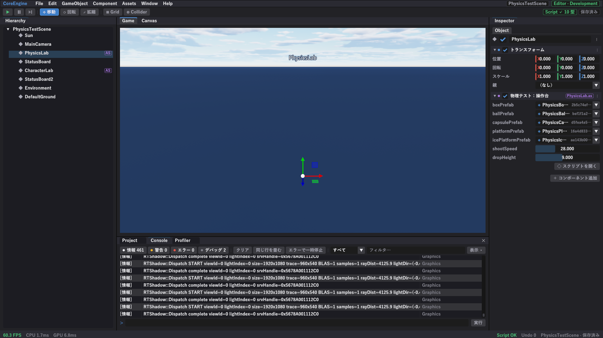
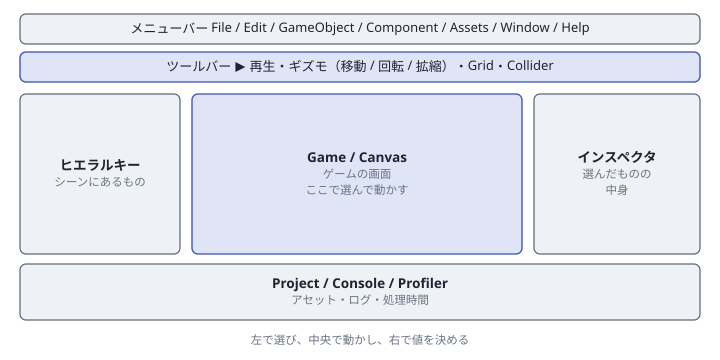
| 場所 | 名前 | 役割 |
|---|---|---|
| 最上段 | メニューバー | File / Edit / GameObject / Component / Assets / Window / Help |
| 2 段目 | ツールバー | 再生・ギズモの切り替え・グリッドとコライダーの表示 |
| 左 | ヒエラルキー | シーンにあるものの一覧 |
| 中央 | Game / Canvas | ゲームの画面。ここで選んで動かす |
| 右 | インスペクタ | 選んだものの中身 |
| 下 | Project / Console / Profiler | アセット・ログ・処理時間 |
Window メニューから出し直せます。レイアウトが崩れたら Window → Layout → レイアウトを初期化です。レイアウトは自動で保存され、次の起動でも同じ配置になります。
再生と停止
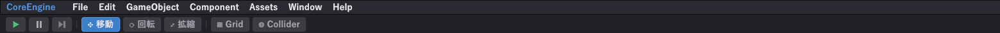
| ボタン | 動作 |
|---|---|
| ▶ | 再生する／止める |
| ⏸ | 一時停止する |
| ⏭ | 一時停止したまま 1 フレームだけ進める |
エディタは停止状態で起動します。 停止中は次のものが動きません。
- スクリプトの
Update/FixedUpdate/LateUpdate - 物理（落ちない・転がらない）
Time::DeltaTime()（0 を返す）
逆に、描画・カメラ操作・ギズモ・インスペクタの編集は止まっていても動きます。 止めたまま見た目を作り込めます。
再生を始めた瞬間のシーンを控えていて、止めるとそこへ戻します。再生中にいくら動かしても、保存したシーンは壊れません。 逆に、再生中に調整した値を残したいときは、止める前に値を控えてください。
ヒエラルキー
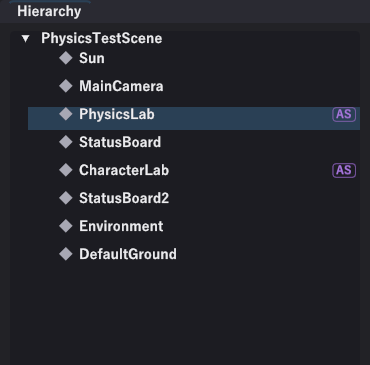
| 操作 | 方法 |
|---|---|
| 選ぶ | クリック |
| 名前を変える | 名前をダブルクリック |
| 親子を開け閉め | 左の ▶ / ▼ |
| カメラを寄せる | 選んでから F |
| 複製 | Ctrl+D |
| 削除 | Del |
右端の AS の印は、そのオブジェクトにスクリプトが付いていることを表します。
オブジェクトが増えても迷わないための仕組み
- 親子は入れ子で表示されます。 子は親の下に字下げして並ぶので、まとまりが見えます
- Game ビューでクリックすると、ヒエラルキーの該当行まで自動でスクロールし、親も開きます。 「画面のこれはどれか」が一発で分かります
- F でカメラが寄ります。 逆に「一覧のこれはどこか」も分かります
インスペクタ
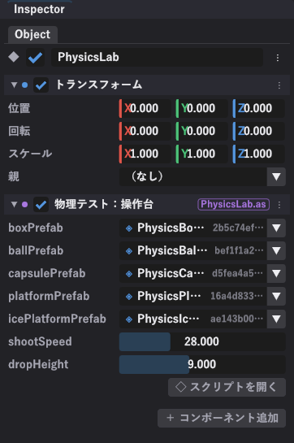
上から順に、
- Object … 名前と、有効・無効のチェック
- 付いているコンポーネント … 上の例では「トランスフォーム」と「物理テスト：操作台」（スクリプト）
- ＋ コンポーネント追加 … 新しいコンポーネントを足す
値の編集
| 型 | 見た目 |
|---|---|
| 数値 | 左右にドラッグで増減。ダブルクリックで直接入力 |
| 色 | 四角を押すとカラーピッカー |
| 真偽 | チェック |
| 列挙 | 一覧から選ぶ |
| アセット | ファイルを選ぶ欄。Project からドラッグでも入る |
| オブジェクト参照 | シーン内の別オブジェクトを選ぶ欄 |
項目名にカーソルを乗せると説明が出るものがあります。
コンポーネントを無効にすると何が止まるか
- スクリプト
Updateなどが呼ばれなくなり、当たり判定の通知も届かなくなる。- 描画するもの
- 描かれなくなる。
- コライダー
- 当たらなくなる。
消すのとは違い、設定は残ります。一時的に切るのに使います。
コンポーネントのメニュー（⋮）
| 項目 | 動作 |
|---|---|
| スクリプトを開く | VS Code でそのファイルを開く（スクリプトのみ） |
| 既定値へ戻す | 書いた初期値に戻す |
| 外す | そのコンポーネントを削除する |
| このオブジェクトだけ保存 | シーンの中のこの 1 個だけを保存する |
| プレハブへ適用 | この場の変更を元のプレハブへ書き戻す |
| プレハブとのつながりを外す | 以後は独立したオブジェクトになる |
Game ビューとギズモ
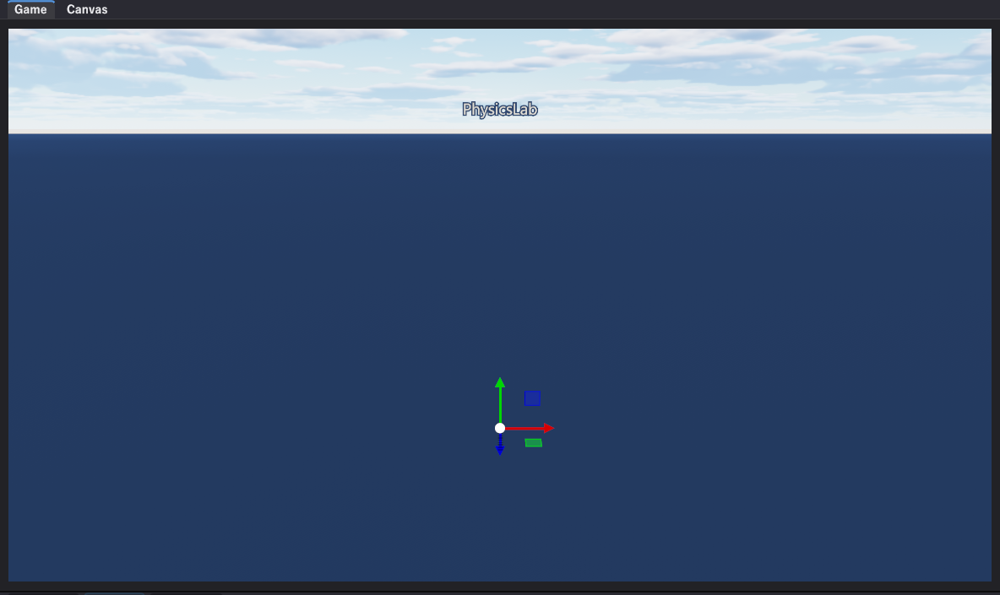
- Game … 3D の画面。ここでオブジェクトを選んだり動かしたりします
- Canvas … UI だけを平面で見る画面。UI の配置はこちらが楽です
ギズモ
| モード | キー | 見た目 |
|---|---|---|
| 移動 | W | 3 本の矢印 |
| 回転 | E | 3 つの輪 |
| 拡縮 | R | 3 本の四角い棒 |
色は軸に対応しています。赤 = X、緑 = Y、青 = Z。矢印 1 本を掴むとその軸だけ、中心の四角を掴むと画面に平行に動きます。
きっちりした値を入れたいときは、ギズモではなくインスペクタの Transform に直接打ち込みます。
ツールバーの Grid と Collider
見た目とコライダーはまったく別物です。「当たらない」「変なところで当たる」と思ったら、まず Collider を押してコライダーの形を線で表示してください。ほとんどの場合これで原因が分かります。
カメラ操作
Game ビューの上にカーソルを置いた状態で操作します。
| 操作 | 方法 |
|---|---|
| 回す（対象の周りを回る） | 中ボタンドラッグ |
| 平行移動 | Shift + 中ボタンドラッグ |
| 寄る・引く | ホイール |
| 視点を回す（その場で向きだけ） | 右ボタンドラッグ |
| 前後左右へ飛ぶ | WASD |
| 上下へ飛ぶ | Q（下） E（上） |
| 速く飛ぶ | Shift を足す |
| 選んだものへ寄る | F |
オブジェクトを選んでいるときの WER はギズモの切り替え、右ドラッグでカメラを動かしている間の W は前進です。割り当ては Help → キー操作を見るで変えられます。
エディタのカメラとゲームのカメラ
| エディタのカメラ | ゲームのカメラ | |
|---|---|---|
| 役割 | 編集中に見回す | 実際にゲームで映る |
| 実体 | シーンに置かれていない | Camera コンポーネントを持ったオブジェクト |
| 動かし方 | 上のマウス操作 | オブジェクトの Transform を動かす |
再生すると、Camera のメインカメラにチェックが入っているオブジェクトの映像になります。
Camera コンポーネント側に位置はありません。カメラのオブジェクトの Transform を動かしてください。
Project ビュー
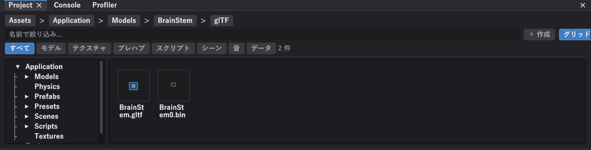
| 場所 | 内容 |
|---|---|
| 上のパンくず | 今いるフォルダ（押すとその階層へ戻る） |
| 名前で絞り込み | 入れた文字を含むものだけ表示 |
| 種類のタブ | すべて / モデル / テクスチャ / プレハブ / スクリプト / シーン / 音 / データ |
| 左のツリー | フォルダの階層 |
| 右の一覧 | 中身。グリッド表示と一覧表示を切り替えられる |
操作
| 操作 | キー |
|---|---|
| コピー | Ctrl+C |
| 切り取り | Ctrl+X |
| 貼り付け | Ctrl+V |
| 名前を変える | F2 |
| 削除 | Del（ごみ箱へ。完全削除はしない） |
＋ 作成から、フォルダとスクリプトを作れます。触れるのは Assets の中だけです。
ドラッグでの配置
- モデル（
.obj.fbx.gltf.glb）を Game ビューへドラッグ → そのモデルのオブジェクトができる - テクスチャ（
.png.jpg.hdr）を インスペクタのテクスチャ欄へドラッグ - ヒエラルキーのオブジェクトを Project ビューへドラッグ → プレハブになる
.meta ファイル
アセットの隣に .meta という同名ファイルができます。中に GUID（そのファイルを指す ID）が入っています。
参照は GUID で保存されます。 そのため、ファイルの名前を変えても、場所を移しても、参照は切れません。
消すと GUID が作り直され、そのファイルへの参照が全部切れます。 エディタの Project ビューから操作すれば .meta も一緒に動くので安全です。エクスプローラで動かすときは .meta も一緒に動かしてください。
コンソール
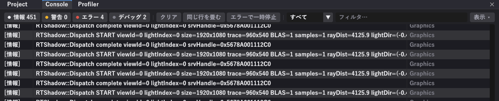
| 操作 | 動作 |
|---|---|
| 情報 / 警告 / エラー / デバッグ の数字 | 押すとその種類だけに絞る |
| クリア | 今までのログを消す |
| 同じ行を畳む | 毎フレーム出る同じログを 1 行にまとめ、右に回数を出す |
| エラーで一時停止 | エラーが出た瞬間に再生を止める |
| すべて ▼ | カテゴリ（Script / Graphics / Audio など）で絞る |
| フィルタ… | 入れた文字を含む行だけ表示 |
エラーの行をダブルクリックすると、VS Code がその行を開きます。
グラフィックスのログが毎フレーム出るため、スクリプトのログはすぐ流れます。カテゴリを Script に絞るか、同じ行を畳むを入れてください。
設定
設定は置き場所が 3 つに分かれています。どこに保存されるかが違います。
| 何を決めるか | どこで | 保存先 |
|---|---|---|
| プロジェクト全体 | Edit → Project Settings | Application/Config/EngineSettings/ |
| 操作の割り当て | Help → キー操作を見る | EngineSettings/InputActions.json |
| 見た目・描画 | Engine Settings | シーンの _environment.json ほか |
Project Settings
- 起動シーン
- 最初に開くシーン。
Project.jsonのinitialScene。 - レイヤー
- 当たり判定の分類。
Layers.json。 - 衝突マトリクス
- どのレイヤーとどのレイヤーが当たるかを表で決める。「弾は敵にだけ当たる」といった制御が、スクリプトを書かずにできる。
Engine Settings
描画まわりの設定です。ここで触る値の多くは CVar で、r.Bloom.Intensity のような名前を持ちます。
| 接頭辞 | 持ち主 | 保存先 |
|---|---|---|
r. など | シーンごと | そのシーンの _environment.json |
| その他 | プロジェクト全体 | Application/Config/ |
このため、シーンごとに違う空・違う色味を持たせられます。夜のステージと昼のステージで別の設定、といった使い方です。
ショートカット一覧
ファイル
| キー | 動作 |
|---|---|
| Ctrl+S | シーンを保存 |
| Ctrl+R | スクリプトを再読み込み |
| Alt+F4 | 終了 |
編集
| キー | 動作 |
|---|---|
| Ctrl+Z | 取り消す |
| Ctrl+Y | やり直す |
| Ctrl+D | 複製 |
| Del | 削除 |
インスペクタでの編集、オブジェクトの追加・削除、ギズモでの移動が取り消しの対象です。再生中の編集は対象外で、止めると再生開始時の状態へまとめて戻ります。
画面
| キー | 動作 |
|---|---|
| Alt+Enter | 全画面 |
| F11 | エディタ UI を隠す（ゲーム画面だけ） |
シーンとオブジェクト
シーンの構成
Application/Assets/Scenes/ の下に、シーン名のフォルダが 1 つあります。
Scenes/
└── MyGame/
├── _scene.json どのオブジェクトを読むか
├── _environment.json 空・雲・霧・ポストエフェクトの設定
├── MainCamera.json オブジェクト 1 個
├── Player.json
└── Coin.jsonオブジェクト 1 個が JSON 1 つです。これは意図した作りで、次の利点があります。
- どのオブジェクトを誰が変えたか、差分で分かります
- 2 人が別のオブジェクトを同時に変えても、マージで衝突しません
- 1 つのオブジェクトをコピーして別のシーンへ持っていけます
_scene.json
{
"objects": [
"MainCamera",
"Player",
"Coin"
],
"defaultGround": false
}| 項目 | 意味 |
|---|---|
objects | 読む順番。上から順に作られる |
defaultGround | 自動の床を出すか（省略すると出る） |
features | シーン独自の機能（水面など。省略可） |
DefaultGround が自動で置かれ、当たり判定も付いています。そのまま物を落とせます。要らないときは "defaultGround": false を書いてください。
_environment.json
空・雲・霧・ポストエフェクトの設定です。中身は CVar の名前と値の一覧になります。
{
"r.Atmosphere.SkyAmbientScale": 0.51,
"r.AutoExposure.Enabled": true,
"r.Bloom.Intensity": 0.95,
"r.Cloud.DensityScale": 0.007
}HeightFog VolumetricCloud PostProcess をシーンに置けますが、中身の値はここ（CVar）が持っています。 コンポーネント側は「このシーンに霧がある」という印と、有効・無効だけです。
シーンの操作
| 操作 | 方法 |
|---|---|
| 新しいシーン | File → 新しいシーン… |
| 開く | File → シーンを開く |
| 保存 | Ctrl+S |
| 読み直す（保存前に戻す） | File → シーンを再読み込み |
複数人で作るときの取り決め
- 1 人 1 オブジェクトずつ触る。 同じ
Player.jsonを 2 人で同時に変えなければ衝突しません _scene.jsonは最後に合わせる。 オブジェクトの追加・削除でここだけは触ります_environment.jsonは担当を決める。 1 ファイルに全部入っているので、同時に触ると衝突します
オブジェクトとコンポーネント
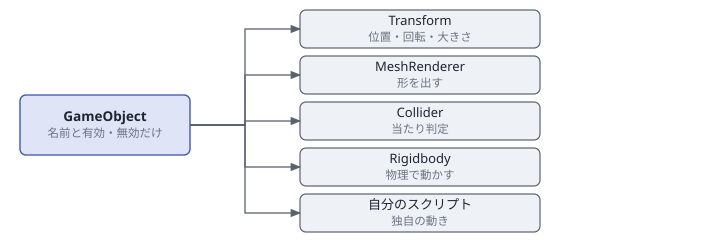
作り方
- GameObject → 空のオブジェクトを作成（
Transformだけが付いた状態でできる） - インスペクタの ＋ コンポーネント追加を押す
- 上の型を検索に文字を入れて絞り込み、選ぶ
Assets/Scripts の下に置いた .as のクラスも、この一覧に並びます。エンジンのコンポーネントと同じ扱いです。
よく使う組み合わせ
| 作りたいもの | コンポーネント |
|---|---|
| ただ見えるだけの飾り | Transform + MeshRenderer + Material |
| 落ちて転がるもの | 上 + Collider + Rigidbody |
| 動かない壁・床 | 上から Rigidbody を外し、Collider の静的を入れる |
| 通り抜けるが反応するもの | Collider のトリガーを入れる |
| 操作するキャラ | Transform + MeshRenderer + Collider + CharacterController |
| 画面に出す文字 | RectTransform + UIText |
親子
インスペクタの Transform にある親の欄で、別のオブジェクトを選ぶと子になります。子は親について動きます。
アニメーションする人型の手に武器を持たせたいときは、親子ではなく SkeletonSocket コンポーネントを使い、ジョイント名（mixamorig:RightHand など）を指定して追従させます。
プレハブ
プレハブはオブジェクトの設計図です。 一度作れば、シーンにいくつでも置けます。
| 操作 | 方法 |
|---|---|
| 作る | ヒエラルキーのオブジェクトを Project ビューへドラッグ |
| 置く | Project ビューのプレハブを Game ビューへドラッグ |
| 直す | 置いたものを変えてから ⋮ → プレハブへ適用 |
中身
プレハブは JSON です。コンポーネントの並びがそのまま入っています。
{
"components": [
{ "type": "Transform", "parameters": { "translate": [0.0, 5.0, 0.0] } },
{ "type": "MeshRenderer", "parameters": { "model": { "guid": "…", "path": "…" } } },
{ "type": "Material", "parameters": { "color": [0.3, 0.6, 0.95, 1.0] } },
{ "type": "Collider", "parameters": { "shapes": [ { "type": "Sphere", "radius": 1.0 } ] } },
{ "type": "Rigidbody", "parameters": { "mass": 1.0, "useGravity": true } }
]
}テキストなので、差分が読めますし、マージもできます。
用意されている見本
Application/Assets/Prefabs/Physics/ に物理のプレハブが並んでいます。作りたいものに近いものを開いて中身を真似るのが早道です。
| プレハブ | 中身 |
|---|---|
PhysicsBall | 球 + 球コライダー + 剛体 + 物理マテリアル |
PhysicsBox | 箱 + 箱コライダー + 剛体 |
PhysicsCapsule | カプセル |
PhysicsPlatform | 板（静的） |
Character | 当たりと操作を持つキャラ |
HumanModel | 見た目の人型 |
スクリプト
言語と制約
スクリプトは AngelScript で書きます。C++ や C# に似た文法です。
決まりは 3 つ
ScriptComponentを継ぐ- ファイル名とクラス名を同じにする
- クラス名はプロジェクト全体で一意にする
これだけで、インスペクタの ＋ コンポーネント追加の一覧に出ます。
#include は要らない
Assets/Scripts の下の .as は全部まとめて 1 つとしてコンパイルされます。
- どのファイルのクラスでも、そのまま名前で使えます
#includeを書いても読み飛ばされます- そのかわり、クラス名が重なるとコンパイルが全部止まります
ファイル名とクラス名を揃えておけば、ファイル名は重複しないのでクラス名も衝突しません。ずれていると警告が出ます。
namespace は文法としては通りますが、コンポーネントの型は名前空間を含まない素の名前で登録されるため、コンポーネントの名前分けには使えません。ヘルパー関数や非コンポーネントのクラスには有効です。
基本の形
[DisplayName("回転させる")]
class Spinner : ScriptComponent
{
[Range(0.0f, 360.0f)] [Tooltip("回る速さ（度/秒）")]
float speed = 90.0f;
void Update()
{
Vector3 rotation = owner.transform.rotation;
rotation.y += speed * 0.0174533f * Time::DeltaTime();
owner.transform.rotation = rotation;
}
}ライフサイクル
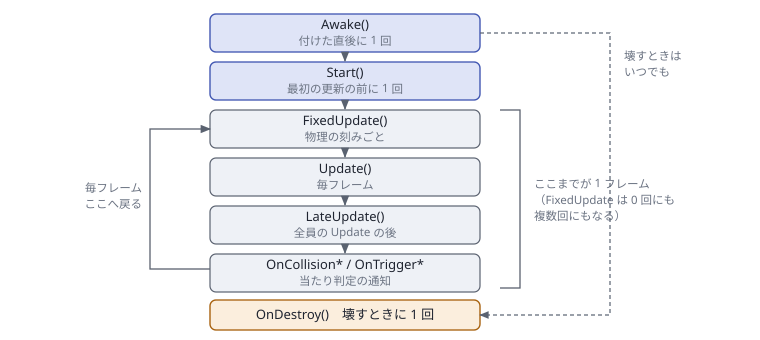
| 関数 | 呼ばれるとき | 書く内容 |
|---|---|---|
Awake() | 付いた直後に 1 回 | 他のコンポーネントはまだ揃っていない。 自分だけで済む初期化 |
Start() | 最初の更新の前に 1 回 | 他を探す初期化はここ。 全オブジェクトが揃っている |
Update() | 毎フレーム | ふつうの処理 |
FixedUpdate() | 物理の刻みごと | 力を加える処理。 フレームによって 0 回にも複数回にもなる |
LateUpdate() | 全員の Update の後 | カメラの追従。 対象が動き終わってから |
OnDestroy() | 壊すときに 1 回 | 後片付け |
OnScriptReloaded() | スクリプトを読み直した後 | エンジンへ渡した関数の渡し直し |
Awake の時点では、自分が最初の 1 個かもしれません。owner.rigidbody が null になります。他を触るのは Start からです。
Update と FixedUpdate の使い分け
// 悪い例：フレームレートで挙動が変わる
void Update()
{
body.AddForce(Vector3(0.0f, 0.0f, 10.0f));
}
// 良い例：刻みが一定なので、どんな環境でも同じ結果
void FixedUpdate()
{
body.AddForce(Vector3(0.0f, 0.0f, 10.0f));
}物理に力を加えるなら FixedUpdate、入力を読むなら Update です。1 回分の時間は Time::FixedDeltaTime() です。
当たり判定の通知
| 関数 | 呼ばれる条件 |
|---|---|
OnTriggerEnter / Stay / Exit | どちらかがトリガーのとき（すり抜ける） |
OnCollisionEnter / Stay / Exit | 両方とも押し出す側のとき（ぶつかる） |
全オブジェクトの LateUpdate の後に呼ばれます。持ち主にコライダーが要り、無効なコンポーネントには届きません。
インスペクタへの公開
公開したメンバ変数は、そのままインスペクタに出て、シーンに保存されます。
float speed = 5.0f; // 出る・保存される
private float timer_ = 0.0f; // 出ない・保存されない出る型
| 型 | インスペクタでの見た目 |
|---|---|
bool | チェック |
int float | 数値（ドラッグで増減） |
string | 文字入力 |
Vector2 Vector3 Vector4 | 数値が 2〜4 個 |
array<T> | 上の型の並び（増減できる） |
属性
[A] [B] と並べても、[A, B] とまとめても書けます。
| 属性 | 効果 |
|---|---|
[DisplayName("名前")] | インスペクタでの表示名（クラスにも付けられる） |
[Range(最小, 最大)] | 編集できる範囲。[Range(最小, 最大, ドラッグ速度)] も書ける |
[Speed(速度)] | ドラッグしたときの増え方だけ決める |
[ReadOnly] | 編集させない。保存もしない（実行中の値を見せる用） |
[Hidden] | インスペクタに出さない（保存はする） |
[Transient] | 保存しない（インスペクタには出す） |
[Color] | Vector4 を色として編集する |
[Tooltip("説明")] | カーソルを乗せたときの説明 |
[Asset("種類")] | string をアセットの参照にする |
[ObjectRef] | シーン内の別オブジェクトへの参照にする |
[Asset] — ファイルを選ばせる
[Asset("Prefab")] [Tooltip("出す弾")]
string bulletPrefab = "";
[Asset("Audio")] [Tooltip("当たったときの音")]
string hitSound = "";使える種類は Texture Model Shader Audio Material Scene Prefab Animation MaterialLibrary Json Csv です。
GUID とパスの両方で保存するので、ファイルの名前を変えても場所を移しても参照が切れません。
[ObjectRef] — 別のオブジェクトと繋ぐ
[ObjectRef] [Tooltip("追いかける相手")]
GameObject@ target;
[ObjectRef] [Tooltip("スコアを持っている人")]
ScoreKeeper@ keeper;インスペクタに選ぶ欄が出ます。ID で保存するので、相手の名前を変えても切れません。クラスのハンドルを書くと、そのクラスのコンポーネントだけが候補になります。
owner.FindObject("Player") は、名前を変えた瞬間に壊れます。しかもエラーにならず、ただ動かなくなります。[ObjectRef] なら繋ぎ忘れがインスペクタで見えます。
書いた初期値の扱い
float speed = 5.0f; の 5.0f は「シーンにまだ値が無いときの値」です。一度インスペクタで変えてシーンを保存すると、以後はシーンの値が使われます。
保存済みのオブジェクトには反映されません。新しい初期値にしたいときは、インスペクタの ⋮ から 既定値へ戻すを使ってください。
参照の取り方
自分に付いているコンポーネント
型名の先頭を小文字にした名前で引けます。
Rigidbody@ body = owner.rigidbody;
CharacterController@ controller = owner.characterController;
UIText@ text = owner.uiText;
UISlider@ slider = owner.uiSlider; // 大文字が続く型は UI までが小文字引くのには手間がかかるので、Start で控えて使い回します。
private Rigidbody@ body_;
void Start()
{
@body_ = owner.rigidbody; // ハンドルへの代入は @ を付ける
}
void FixedUpdate()
{
if (body_ is null) { return; }
body_.AddForce(Vector3(0.0f, 0.0f, 10.0f));
}body_ = owner.rigidbody; と書くとハンドルの差し替えになりません。必ず @body_ = ... と書いてください。
他のスクリプト
private ScoreKeeper@ keeper_;
void Start()
{
GameObject@ manager = owner.FindObject("GameManager");
if (manager !is null) {
manager.GetComponent(@keeper_);
}
}繋ぎ方の使い分け
| 方法 | 書き方 | 向いている場面 |
|---|---|---|
| インスペクタで繋ぐ | [ObjectRef] GameObject@ target; | 繋ぎ先が決まっているとき（推奨） |
| 名前で探す | owner.FindObject("名前") | 1 個しかないもの（マネージャなど） |
| 当たった相手から | other.gameObject | 触れたものに反応するとき |
オブジェクトを作る・消す
// プレハブから作る
GameObject@ made = owner.InstantiatePrefab(prefabPath, "Bullet");
// 消す
owner.Destroy(); // 自分ごと
made.Destroy(); // 他のものDestroy() を呼んだ後は isAlive が false になります。持ち続けるなら if (target !is null && target.isAlive) で確かめてください。
ホットリロードと部分差し戻し
エディタのあるビルドでは、.as を保存した瞬間に読み直します。 再生を止める必要はありません。
- インスペクタに出るメンバ変数の値は持ち越します
- それ以外のメンバ変数は書いた初期値に戻ります
- Tween などエンジンへ渡した関数は呼ばれなくなります（
OnScriptReloaded()で渡し直す）
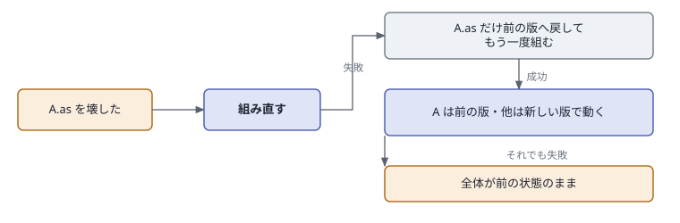
書きかけの 1 ファイルがコンパイルできなくても、そのファイルだけ直前の版に戻して他は新しい版で動きます。「ちょっと直している間、全部が古い状態に戻る」ということはありません。
警告にこう出ます。
A.as は直す前の版のまま動いています（このファイルのエラーを直すと入れ替わります）戻したファイルのクラスを他のファイルが新しい形で使っているときは、2 回目も失敗します（A に足したばかりのメンバを B が呼んでいる、など）。そのときは全体が前の状態のままになります。起動して最初のコンパイル（戻せる版が無い）も同じです。
スクリプトを作る
Project ビューで ＋ 作成 → スクリプトを作成…、または一覧の空きを右クリック。
| 雛形 | 中身 |
|---|---|
Basic | Start と Update |
Collision | Start Update と当たり判定の関数 |
Empty | クラスだけ |
雛形は Application/Config/ScriptTemplates/*.as.txt にあります。ファイルを足せば選択肢が増えます。 中の {CLASS} がクラス名に置き換わります。
.as にすると、雛形そのものがスクリプトとしてコンパイルされてしまいます。
入力
操作の名前で書く
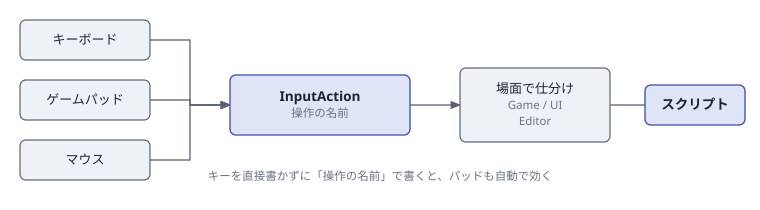
Input::IsKeyPressed(Key::W) と書くこともできますが、この書き方だとゲームパッドが効かず、キー割り当ても変えられず、UI を操作している最中にもキャラが動きます。
操作の名前（InputAction）で書くと、これが全部解決します。
if (Input::IsActionTriggered(InputAction::Jump)) {
Jump();
}3 つの聞き方
| 関数 | いつ true か | 使いどころ |
|---|---|---|
IsActionPressed | 押している間ずっと | 移動・ダッシュ・溜め |
IsActionTriggered | 押した瞬間だけ | ジャンプ・攻撃・決定 |
IsActionReleased | 離した瞬間だけ | 溜め撃ちを放つ |
IsActionPressed を使うと、押しっぱなしで跳び続けます。IsActionTriggered にしてください。
軸でまとめて取る
反対向きの 2 つ（または 4 つ）をまとめて、-1〜1 の値で取れます。キーでもスティックでも同じ値になります。
// 左右だけ
float x = Input::GetAxis(InputAction::MoveLeft, InputAction::MoveRight);
// 前後左右をまとめて
Vector2 stick = Input::GetAxis2D(
InputAction::MoveLeft, InputAction::MoveRight,
InputAction::MoveBack, InputAction::MoveForward);
Vector3 move = Vector3(stick.x, 0.0f, stick.y) * speed;スティックは倒した量に応じて途中の値になります。キーは -1 か 0 か 1 です。
場面（Context）
各操作には場面が決まっています。
| 場面 | いつ効くか |
|---|---|
Game | ふつうに遊んでいる間 |
UI | UI を選んでいる間（ボタンにフォーカスがある間） |
Editor | エディタのあるビルドでだけ |
UI を選んでいる間は Game の操作が止まります。決定ボタンでボタンを押した瞬間にキャラも跳ぶ、ということが起きません。
ゲームパッド
最大 4 台まで見ます。プレイヤー番号は 0〜3 です。
// 誰が押しても反応する（既定）
Input::IsActionPressed(InputAction::Jump);
// 1 人目だけ
Input::IsActionPressed(InputAction::Jump, 0);
Vector2 left = Input::GetLeftStick(0);
float trigger = Input::GetRightTrigger(0);
Input::SetVibration(0.6f, 0.6f, 0); // 左, 右, プレイヤー番号player を省くと「誰か 1 人でも押していれば」になります。番号を指定すると、そのパッドだけを見ます。2 人プレイを作るときはこうします。
振動を止めるのは自分の仕事です。時間を数えて SetVibration(0, 0, 0) を入れてください。
入力アクション一覧
Application/Config/EngineSettings/InputActions.json の中身です。Help → キー操作を見る（Key Config）から編集できます。スクリプトは書き換えません。
| 名前 | 表示 | 場面 | 既定の割り当て |
|---|---|---|---|
MoveForward | 前進 | Game | W ↑ 左スティック上 十字上 |
MoveBack | 後退 | Game | S ↓ 左スティック下 十字下 |
MoveLeft | 左移動 | Game | A ← 左スティック左 十字左 |
MoveRight | 右移動 | Game | D → 左スティック右 十字右 |
Jump | ジャンプ | Game | Space A ボタン |
Sprint | ダッシュ | Game | Shift 左スティック押し込み |
Attack | 攻撃 | Game | マウス左 X ボタン |
Interact | インタラクト | Game | E B ボタン |
UINavigateUp | UI上 | UI | ↑ 左スティック上 十字上 |
UINavigateDown | UI下 | UI | ↓ 左スティック下 十字下 |
UINavigateLeft | UI左 | UI | ← 左スティック左 十字左 |
UINavigateRight | UI右 | UI | → 左スティック右 十字右 |
UIConfirm | UI決定 | UI | Enter A ボタン |
UICancel | UIキャンセル | UI | Esc B ボタン |
Pause | ポーズ | Game+UI | Esc Start ボタン |
EditorFocusSelection | 選択へ寄る | Editor | F |
EditorGizmoTranslate | ギズモ：移動 | Editor | W |
EditorGizmoRotate | ギズモ：回転 | Editor | E |
EditorGizmoScale | ギズモ：拡縮 | Editor | R |
綴りの読み方
| 形 | 意味 |
|---|---|
Key:W | キーボードの W |
Mouse:Left | マウスの左ボタン |
Gamepad:A | パッドの A ボタン |
Axis:LeftStickY+ | 左スティックの Y を倒した向き（+ / -） |
Ctrl+Key:S | 組み合わせ（Ctrl Shift Alt） |
足す
{
"id": "Dash",
"display": "回避",
"context": "Game",
"defaults": ["Key:LControl", "Gamepad:B"]
}スクリプトからは InputAction::Dash で使えます。
物理と当たり判定
3 つの動かし方
| 動かし方 | コンポーネント | 用途 |
|---|---|---|
| 物理に任せる | Rigidbody（動的） | 落ちる・転がる・積み上がるもの |
| 自分で動かす（当たりは効く） | CharacterController | 操作キャラ・敵 |
| 自分で動かす（当たりは無視） | Transform だけ | 演出・カメラ・UI |
どちらも位置を動かすので、取り合いになります。
Rigidbody
| 項目 | 意味 |
|---|---|
| 種別 | 動的（重力と力で動く）/ キネマティック（速度を指定して動かす）/ 静的（動かない） |
| 質量 | kg。キネマティックと静的では無限として扱う |
| 重力を受ける | 落ちるか |
| 抗力 | 大きいほど速度が早く落ちる（0 で減らさない） |
| 回転の抗力 | 大きいほど回転が早く止まる（転がり続けるのを防ぐ） |
| 回転を止める | 接触で回らなくなる（向きは自分で指定する） |
| 操作 | 意味 |
|---|---|
AddForce | 力を加える（押し続けるイメージ。毎フレーム呼ぶ） |
AddImpulse | 撃力を加える（一発叩くイメージ。1 回だけ呼ぶ） |
AddTorque | 回す力を加える |
WakeUp | 眠っているものを起こす |
ほとんど動かなくなった物体は計算から外れます。他の物がぶつかれば自動で起きますが、スクリプトから力を加えるときは WakeUp() が要ることがあります。眠っている数は Physics::GetSleepingCount() で見られます。
Collider の静的にチェックを入れるだけです。付けると床が落ちていきます。
CharacterController
private CharacterController@ controller_;
void Start()
{
@controller_ = owner.characterController;
}
void Update()
{
Vector2 stick = Input::GetAxis2D(
InputAction::MoveLeft, InputAction::MoveRight,
InputAction::MoveBack, InputAction::MoveForward);
controller_.SimpleMove(Vector3(stick.x, 0.0f, stick.y) * speed);
if (controller_.grounded && Input::IsActionTriggered(InputAction::Jump)) {
controller_.Jump(jumpSpeed);
}
}| 項目 | 既定 | 意味 |
|---|---|---|
| 登れる坂 | 45 度 | これより急な坂では滑り落ちる |
| 越えられる段差 | 0.3 m | これ以下の段差は歩いたまま上がる |
| 表面の余白 | 0.02 m | 壁との間に残す隙間 |
| 重力を受ける | 有効 | 接地していないと落ちる |
grounded | — | 接地しているか（読むだけ） |
velocity | — | 今の速度 |
SimpleMove は重力を自動で足します。自分で扱いたいときは Move を使ってください。
当たり判定
| 使いたいもの | コライダーの設定 | 受け取る関数 |
|---|---|---|
| アイテム・ゴール・判定エリア | トリガーを入れる | OnTriggerEnter |
| 壁・床・ぶつかる敵 | トリガーを外す | OnCollisionEnter |
// アイテム・ゴール・判定エリア
void OnTriggerEnter(Collision@ other)
{
if (other.layer != CollisionLayer::Player) { return; }
owner.Destroy();
}
// ぶつかる
void OnCollisionEnter(Collision@ collision)
{
if (collision.impulse > 5.0f) { // ぶつかった強さ（N・s）
PlayHitSound();
}
}Collision から取れるもの
| 項目 | 意味 |
|---|---|
gameObject | 相手のオブジェクト |
layer | 相手のレイヤー |
selfLayer | 自分のレイヤー |
normal | ぶつかった面の向き |
point | ぶつかった位置 |
impulse | ぶつかった強さ（N・s） |
depth | めり込んだ深さ |
isTrigger | トリガーだったか |
名前での判定はオブジェクト名を変えると壊れます。other.layer == CollisionLayer::Enemy のようにレイヤーで絞ってください。レイヤー同士が当たるかどうかは Project Settings の衝突マトリクスで決められるので、そもそも判定が要らなくなることもあります。
光線と範囲の検索
// 足元に床があるか
RaycastHit@ hit = Physics::Raycast(
owner.transform.position,
Vector3(0.0f, -1.0f, 0.0f),
2.0f,
Physics::LayerMask(CollisionLayer::Default));
if (hit !is null) {
Log("床まで " + hit.distance + " m");
}| 関数 | 返すもの |
|---|---|
Raycast | いちばん手前に当たったもの 1 つ |
RaycastAll | 当たったもの全部 |
OverlapSphere | 球の中にあるもの全部 |
OverlapBox | 箱の中にあるもの全部 |
// 爆発：半径 5m の中の敵にダメージ
GameObject@[]@ hits = Physics::OverlapSphere(
owner.transform.position, 5.0f, Physics::LayerMask(CollisionLayer::Enemy));
for (uint i = 0; i < hits.length(); i++) {
Health@ health;
if (hits[i].GetComponent(@health)) {
health.Damage(50);
}
}当たらないときの調べ方
- ツールバーの Collider を押す。 コライダーの形が線で出ます。見た目とコライダーは別物です
- トリガーのチェックを確かめる。呼ばれる関数が変わります
- 衝突マトリクスを確かめる。そのレイヤー同士が切られているかもしれません
- コンポーネントが無効になっていないか確かめる。無効なスクリプトには通知が届きません
- どちらも静的になっていないか確かめる。静的なものは押し出されません
UI
部品の構成
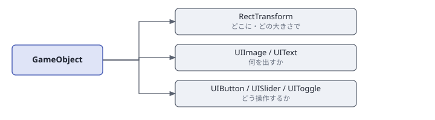
| コンポーネント | 役割 |
|---|---|
RectTransform | どこに・どの大きさで（他の UI と必ず組で使う） |
UIImage | 画像や単色の四角を出す |
UIText | 文字を出す |
UIButton | 押せるようにする |
UISlider | 値をつまみで決める |
UIToggle | 入り切りを覚える |
UIImage や UIText を足すと、RectTransform は自動で付きます。UI の配置は Canvas ビューで行うと楽です。
RectTransform
| 項目 | 意味 |
|---|---|
| アンカー | 画面のどこを基準にするか（9 か所） |
| 位置 | 基準からのずらし（px） |
| 基準点 | 自分のどこを位置に合わせるか（(0,0) = 左上、(0.5,0.5) = 中央） |
| 大きさ | px |
| 回転 | ラジアン |
| 描画順 | 大きいほど手前 |
アンカーは TopLeft TopCenter TopRight MiddleLeft Center MiddleRight BottomLeft BottomCenter BottomRight です。
アンカーを TopLeft にすると、ウィンドウを大きくしても左上からの距離が保たれます。スコアは左上、体力バーは下中央、といった使い分けをします。
文字（UIText）
UIText@ text = owner.uiText;
text.text = "スコア: " + score;
text.fontSize = 36.0f;
text.SetOutline(Vector4(0.0f, 0.0f, 0.0f, 1.0f), 0.15f);
text.SetAlign(TextAlignH::Center, TextAlignV::Middle);明るい空の上に白い文字を置くと読めません。黒い縁取りを 0.15 ほど付けるだけで、どんな背景でも読めるようになります。
文字列の組み立てとフォントの処理は重めです。値が変わったときだけ書き換えてください。
ボタン（UIButton）
| 項目 | 意味 |
|---|---|
wasClicked | 押されたか（押された次のフレームだけ true） |
hovered | ポインタが乗っているか |
focused | キー・パッドで選ばれているか |
pressed | 押されている最中か |
interactable | 押せるか（false で灰色になる） |
Focus() | このボタンを選んだ状態にする |
これを呼ばないと、キーボードとパッドで選ぶ対象が決まりません。タイトル画面・ポーズ画面では必ず 1 つ選んでおきます。
選ばれているボタンは「乗せたときの色」になります。方向キー・十字キー・左スティックで隣へ移り、Enter か A ボタンで押せます。
スライダー（UISlider）
| 役 | 付けるもの |
|---|---|
| 溝（当たり判定） | RectTransform + UIImage + UISlider |
| 伸びる帯 | RectTransform + UIImage |
| つまみ | RectTransform + UIImage |
| 項目 | 意味 |
|---|---|
value | 今の値 |
minValue / maxValue | 範囲（外の値を入れると端で止まる） |
wholeNumbers | 整数に丸めるか |
direction | 値が増える向き（0 = 左から右、1 = 右から左、2 = 上から下、3 = 下から上） |
navigationStep | キーで 1 回に動く量（0 なら範囲の 1/10） |
帯のどこを押してもその位置の値になります。 フォーカス中は左右キーで動き、上下キーではフォーカスが隣へ移ります。
トグル（UIToggle）
| 項目 | 意味 |
|---|---|
isOn | 入っているか |
group | 同じ綴りのトグル同士で 1 つだけが入る |
interactable | 押せるか |
入りのときに出す印に UIImage を繋ぐと、入りのときだけ出ます。グループを使うと「低 / 中 / 高」のような択一の選択になります。グループに入っているトグルは、入っているものを押しても切れません（全部切りにならないように）。
フォーカスを外す
場面が UI になるためです。メニューを閉じるときは UI::ClearFocus() を呼んでください。
音
2 つの鳴らし方
| 方法 | 用途 |
|---|---|
AudioSource コンポーネント | ふつうはこちら。 設定だけで鳴る |
Audio:: の関数 | 音のファイルが実行時に決まるとき |
AudioSource
| 項目 | 意味 |
|---|---|
| 音 | 鳴らすファイル |
| 出力先 | BGM / 効果音 / ボイス（音量設定の単位） |
| 開始時に鳴らす | 再生が始まったら自動で鳴らす |
| 繰り返す | ループするか |
| 音量 / 高さ / 消音 | そのまま |
| フェードイン | 音量 0 からここまで上げる秒数 |
| 距離で変える | 0 = どこでも同じ音量、1 = 距離と左右を反映 |
| 減衰の始まり / 聞こえる限界 | この距離までは下がらない / この距離で 0 |
| 操作 | 意味 |
|---|---|
Play() | 先頭から鳴らす（鳴っていれば鳴らし直す） |
Stop() | 止める |
Pause() / UnPause() | 位置を保って止める / 再開 |
PlayOneShot() | 重ねて鳴らす（止められない） |
FadeOut(秒) | 下げてから止める |
isPlaying | 鳴っているか |
AudioSource を足して、出力先 = BGM、開始時に鳴らす = 有効、繰り返す = 有効、フェードイン = 1.5 にするだけで鳴ります。
Play() は鳴らし直しになるため、連打すると切れます。効果音は PlayOneShot() を使ってください。
距離で音量を変える（3D 音）
- カメラに
AudioListenerを付ける（シーンに 1 つ） - 音を出す側の
AudioSourceで距離で変えるを1にする - 減衰の始まりと聞こえる限界を決める
これで、離れるほど小さくなり、右にあるものは右から鳴ります。
聞き手がいないと距離を測れないので、警告を 1 回出して距離を無視します。既定は 2D（距離で変える = 0）です。UI の音や BGM は 0 のままにしてください。
バス
Audio::SetMasterVolume(0.8f);
Audio::SetBusVolume(AudioBus::BGM, 0.5f);
Audio::SetBusVolume(AudioBus::SE, 0.9f);
float now = Audio::GetBusVolume(AudioBus::BGM);
Audio::StopAll();鳴っている音の本数に関係なく、まとめて効きます。 設定画面のスライダーはこれを動かします。
音が鳴らないときの調べ方
| 症状 | 原因 |
|---|---|
| まったく鳴らない | 停止中。 ▶ を押す |
| ファイルを指していない | インスペクタの音の欄が空だと、警告を出して鳴らない |
| 小さすぎる | バス音量かマスター音量が下がっている |
| 遠くで鳴らない | 距離で変えるが 1 で、聞こえる限界より遠い |
| 連打で切れる | Play() ではなく PlayOneShot() を使う |
| BGM が効果音の音量で変わる | 出力先が SE のまま |
対応している形式は WAV と、Media Foundation が読めるもの（MP3 など）です。
時間・動き・シーン遷移
時間
float dt = Time::DeltaTime(); // 前フレームからの秒数
float unscaled = Time::UnscaledDeltaTime();
float fixed = Time::FixedDeltaTime(); // 物理 1 刻み分
Time::SetTimeScale(0.2f); // スローモーション
Time::SetTimeScale(0.0f); // 完全に止める（ポーズ）position.x += 0.1f; はフレームレートで速さが変わります。position.x += 5.0f * Time::DeltaTime(); と書いてください（どの環境でも 5 m/s）。
DeltaTime は TimeScale が掛かった値、UnscaledDeltaTime は掛かっていない値です。ポーズ中でも動かしたいもの（メニューの演出、暗転）は UnscaledDeltaTime を使ってください。
Tween
Tween::MoveTo(owner, Vector3(0.0f, 5.0f, 0.0f), 2.0f)
.SetEase(EaseType::EaseOutBack)
.SetDelay(0.2f)
.SetLink(owner); // 消えたら Tween も止まる| よく使う EaseType | 見た目 |
|---|---|
Linear | 一定速度 |
EaseOutQuad EaseOutCubic | 勢いよく始まってゆっくり止まる（いちばん無難） |
EaseInQuad | ゆっくり始まって加速 |
EaseOutBack | 行き過ぎて戻る |
EaseOutBounce | 跳ねて止まる |
EaseOutElastic | ぷるぷる揺れて止まる |
In / Out / InOut と Quad Cubic Quart Quint Sine Expo Circ Back Elastic Bounce の組み合わせで、全部で 31 種類あります。
読み直すとエンジンへ渡した関数は呼ばれなくなります。渡し直しは OnScriptReloaded() に書いてください。
カメラを揺らす
CameraShake::PlayPreset("Hit");
CameraShake::PlayPreset("Explosion", 1.5f); // 強さ 1.5 倍
// 連続してぶつかるほど強く揺れる
CameraShake::AddTrauma(collision.impulse * 0.02f);プリセットは Hit HeavyHit Explosion Landing Recoil Earthquake Handheld Rumble です。
乱数
float f = Random::Range(0.0f, 1.0f); // 0.0 以上 1.0 以下
int i = Random::Range(0, 10); // 0 以上 10 未満
bool hit = Random::Chance(0.3f); // 30% で true毎回同じ並びにしたいときは RandomStream（同じ種から同じ並びが出る）を使います。
シーン遷移と値の保持
| 入れ物 | 生きる範囲 | 例 |
|---|---|---|
| メンバ変数 | そのオブジェクトが生きている間 | 残り HP・弾数 |
Session | アプリを閉じるまで | ステージ間のスコア・選んだキャラ |
CVar | 次回の起動でも | 音量設定・ハイスコア・難易度 |
// ゲーム側
Session::SetInt("score", score);
Scene::ChangeScene("Result");
// リザルト側
int score = Session::GetInt("score", 0);シーンを切り替えるとオブジェクトは全部作り直されます。 持ち越したい値は Session に入れてください。
暗転を挟む
Tween::To(0.0f, 1.0f, 0.5f, function(float value) {
Rendering::SetFadeAlpha(value);
}).OnComplete(function() {
Scene::ChangeScene("Result");
});実装手順
ここから先は、実際に手を動かす順番です。5 つ通すとタイトル → ゲーム → 設定の形ができます。
手順 1：玉を転がす
目的 — 玉を落として跳ねさせる。スクリプトはまだ書かない。
1. シーンを作る
File → 新しいシーン… で BallTest を作ります。床は最初から入っています。
2. 玉を置く
GameObject → 空のオブジェクトを作成で Ball を作り、4 つのコンポーネントを足します。
| コンポーネント | 設定 |
|---|---|
MeshRenderer | モデルに Assets/Models/Sphere/sphere.obj（Project からドラッグ） |
Material | 色 = 好きな色、メタリック 0.2、ラフネス 0.45 |
Collider | 球を 1 つ、半径 1、トリガーは外す |
Rigidbody | 種別 = 動的、質量 1、重力を受ける = 有効 |
Transform の位置の Y を 5 にして、空中から落とします。
3. 跳ねさせる
▶ を押すと落ちて床で止まりますが、まだ跳ねません。 PhysicsMaterial を足します。
| 項目 | 値 | 意味 |
|---|---|---|
| 反発 | 0.7 | 跳ね返る強さ（0 = 跳ねない、1 = 減らずに跳ね続ける） |
| 摩擦 | 0.5 | すべりにくさ |
4. 坂を作る
Slope を作り、MeshRenderer に板のモデル、Collider に箱を 1 つ、静的にチェック、Transform の回転 Z を -0.3（ラジアン）。
5. 使い回す
Ball をヒエラルキーから Project ビューへドラッグするとプレハブになります。以後は何個でも置けます。
手順 2：キャラを動かす
目的 — キーボードとゲームパッドでキャラを歩かせ、跳ばせる。初めてスクリプトを書く。
1. キャラを置く
| コンポーネント | 設定 |
|---|---|
MeshRenderer | カプセルか球のモデル |
Material | 好きな色 |
Collider | 球を 1 つ、半径 0.5 |
CharacterController | 既定のまま |
2. スクリプトを作る
Project ビューで Assets/Scripts を開き、＋ 作成 → スクリプトを作成…（雛形 Basic、名前 PlayerMove）。
[DisplayName("プレイヤー操作")]
class PlayerMove : ScriptComponent
{
[Range(1.0f, 12.0f)] [Tooltip("歩く速さ m/s")]
float walkSpeed = 4.0f;
[Range(2.0f, 20.0f)] [Tooltip("走る速さ m/s")]
float runSpeed = 8.0f;
[Range(2.0f, 15.0f)] [Tooltip("跳び上がる速さ m/s")]
float jumpSpeed = 5.5f;
private CharacterController@ controller_;
void Start()
{
@controller_ = owner.characterController;
}
void Update()
{
if (controller_ is null) { return; }
// 前後左右をまとめて -1〜1 の値で受け取る
Vector2 stick = Input::GetAxis2D(
InputAction::MoveLeft, InputAction::MoveRight,
InputAction::MoveBack, InputAction::MoveForward);
float speed = Input::IsActionPressed(InputAction::Sprint) ? runSpeed : walkSpeed;
Vector3 move = Vector3(stick.x, 0.0f, stick.y) * speed;
controller_.SimpleMove(move);
if (controller_.grounded && Input::IsActionTriggered(InputAction::Jump)) {
controller_.Jump(jumpSpeed);
}
}
}3. 付けて動かす
Player に ＋ コンポーネント追加から PlayerMove を足し、▶ を押します。WASD で歩き、Shift で走り、Space で跳びます。ゲームパッドでもそのまま動きます。
手順 3：集めて数える
目的 — アイテムに触ると消えて、数が増えるようにする。スクリプト同士でデータをやり取りする。
1. アイテムを作る
Coin を作り、MeshRenderer・Material（金色、メタリック 0.9）・Collider（球、半径 0.6、トリガーにチェック）。
チェックを入れないと、プレイヤーがコインに乗り上げます。
2. 数える側
GameManager を作り、スクリプト ScoreKeeper を付けます。
[DisplayName("スコア")]
class ScoreKeeper : ScriptComponent
{
[ReadOnly] [Tooltip("集めた数")]
int collected = 0;
[ObjectRef] [Tooltip("数を出すテキスト")]
GameObject@ label;
[Tooltip("全部集めたときに出す文字")]
string clearMessage = "コンプリート！";
private int total_ = 0;
private UIText@ text_;
void Start()
{
collected = 0;
if (label !is null) {
@text_ = label.uiText;
}
Refresh();
}
void AddOne()
{
collected++;
Refresh();
if (total_ > 0 && collected >= total_) {
if (text_ !is null) { text_.text = clearMessage; }
}
}
void Register()
{
total_++;
Refresh();
}
private void Refresh()
{
if (text_ !is null) {
text_.text = collected + " / " + total_;
}
}
}3. コイン側
[DisplayName("コイン")]
class Coin : ScriptComponent
{
[Tooltip("回る速さ（度/秒）")]
float spinSpeed = 90.0f;
private ScoreKeeper@ keeper_;
void Start()
{
GameObject@ manager = owner.FindObject("GameManager");
if (manager !is null) {
manager.GetComponent(@keeper_);
if (keeper_ !is null) {
keeper_.Register();
}
}
}
void Update()
{
// くるくる回して目立たせる（回転はラジアンなので度から直す）
Vector3 rotation = owner.transform.rotation;
rotation.y += spinSpeed * 0.0174533f * Time::DeltaTime();
owner.transform.rotation = rotation;
}
void OnTriggerEnter(Collision@ other)
{
if (other.gameObject.name != "Player") { return; }
if (keeper_ !is null) {
keeper_.AddOne();
}
owner.Destroy();
}
}Coin を Ctrl+D で何個か複製して散らばらせ、▶ を押します。
手順 4：画面に出す
目的 — 集めた数を画面の隅に表示する。
1. 文字を置く
上のタブを Canvas に切り替え、GameObject → UI → テキストで ScoreLabel を作ります。
| コンポーネント | 項目 | 値 |
|---|---|---|
RectTransform | アンカー | 左上 |
| 位置 | (40, 40) | |
| 基準点 | (0, 0) | |
UIText | テキスト | 0 / 0 |
| フォントサイズ | 36 | |
| 色 / 縁取りの色 | 白 / 黒 | |
| 縁取りの太さ | 0.15 |
2. 繋ぐ
GameManager を選び、ScoreKeeper の数を出すテキストの欄から ScoreLabel を選びます。▶ を押すと、コインを取るたびに左上の数字が増えます。
3. 体力バーを作る
UIImage を 2 枚重ねると、伸び縮みするバーになります。HpFill の基準点を (0, 0.5) にすると、左端を固定したまま幅を変えられます。
void SetHp(float ratio) // 0.0〜1.0
{
RectTransform@ rect = fill.rectTransform;
Vector2 size = rect.size;
size.x = 400.0f * ratio;
rect.size = size;
}手順 5：タイトルと設定
目的 — タイトル画面から始めて、設定画面で音量を変えられるようにする。
1. タイトルのボタン
File → 新しいシーン… で Title を作り、GameObject → UI → 画像で作ったオブジェクトに UIButton を足します。
[DisplayName("タイトル")]
class TitleMenu : ScriptComponent
{
[ObjectRef] [Tooltip("はじめる")]
GameObject@ startButton;
[ObjectRef] [Tooltip("やめる")]
GameObject@ exitButton;
[Asset("Scene")] [Tooltip("はじめたときに行くシーン")]
string nextScene = "";
void Start()
{
// キーとパッドでも操作できるよう、最初のボタンを選んでおく
if (startButton !is null) {
UIButton@ button = startButton.uiButton;
if (button !is null) { button.Focus(); }
}
}
void Update()
{
if (WasClicked(startButton) && nextScene != "") {
Scene::ChangeScene(nextScene);
}
if (WasClicked(exitButton)) {
Log("やめる が押されました");
}
}
private bool WasClicked(GameObject@ object)
{
if (object is null) { return false; }
UIButton@ button = object.uiButton;
return button !is null && button.wasClicked;
}
}2. 設定画面
スライダーを 3 本（全体・BGM・効果音）と戻るボタンを置き、次のスクリプトを付けます。
[DisplayName("設定")]
class SettingsMenu : ScriptComponent
{
[ObjectRef] [Tooltip("全体の音量")]
GameObject@ masterSlider;
[ObjectRef] [Tooltip("BGM の音量")]
GameObject@ bgmSlider;
[ObjectRef] [Tooltip("効果音の音量")]
GameObject@ seSlider;
[ObjectRef] [Tooltip("戻るボタン")]
GameObject@ backButton;
[Tooltip("戻る先のシーン")]
string titleScene = "Title";
void Start()
{
// 前回の設定をつまみへ戻す
Apply(masterSlider, Session::GetFloat("vol.master", 1.0f));
Apply(bgmSlider, Session::GetFloat("vol.bgm", 0.8f));
Apply(seSlider, Session::GetFloat("vol.se", 0.8f));
}
void Update()
{
float master = Read(masterSlider, 1.0f);
float bgm = Read(bgmSlider, 0.8f);
float se = Read(seSlider, 0.8f);
// 毎フレーム同じ値を入れても害はない（バス音量はただの倍率）
Audio::SetMasterVolume(master);
Audio::SetBusVolume(AudioBus::BGM, bgm);
Audio::SetBusVolume(AudioBus::SE, se);
Session::SetFloat("vol.master", master);
Session::SetFloat("vol.bgm", bgm);
Session::SetFloat("vol.se", se);
if (backButton !is null) {
UIButton@ button = backButton.uiButton;
if (button !is null && button.wasClicked) {
Scene::ChangeScene(titleScene);
}
}
}
private float Read(GameObject@ object, float fallback)
{
if (object is null) { return fallback; }
UISlider@ slider = object.uiSlider;
return slider is null ? fallback : slider.value;
}
private void Apply(GameObject@ object, float value)
{
if (object is null) { return; }
UISlider@ slider = object.uiSlider;
if (slider !is null) { slider.value = value; }
}
}3. 起動シーンを変える
{
"initialScene": "Title",エラーと対処
壊れたことに気づく
右上の印が赤になります。
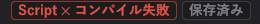
同時に、Console のエラーの数が増え、右下が Script 失敗 になり、直したスクリプトのコンポーネントが「読み込めない型」になります。
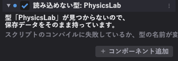
「読み込めない型」と出ても保存したデータはそのまま持っています。 消さないでください。エラーを直せば元に戻ります。
エラーを読む
PhysicsTestScene/_BrokenSample.as(9, 14) : Can't implicitly convert from 'const string' to 'int&'.
スクリプトのコンパイルに失敗しました（12 ファイル）| 部分 | 意味 |
|---|---|
_BrokenSample.as | どのファイルか |
(9, 14) | 9 行目の 14 文字目 |
| 残り | 何が悪いか |
その行をダブルクリックすると、VS Code がその行を開きます。
よく出るエラー
Can't implicitly convert from 'X' to 'Y'
型が合っていません。
int hp = "100"; // 文字列は整数に入らない
float f = someInt; // これは通る（int → float）
int i = someFloat; // これは通らない（float → int は明示が要る）
int i = int(someFloat); // こう書く'X' is not a member of 'Y'
その名前のメンバがありません。綴りを確かめてください。型名の先頭を小文字にした名前で引きます（UISlider なら owner.uiSlider）。
Name conflict. 'X' is a class
同じクラス名が 2 つあります。 .as は全部まとめてコンパイルされるので、クラス名はプロジェクト全体で一意である必要があります。ファイル名とクラス名を揃えておけば起きません。
Null pointer access（実行中に出る）
null のハンドルを触りました。Awake で他のコンポーネントを取ろうとしたときによく出ます。Start に移してください。
// 悪い
owner.rigidbody.AddForce(force);
// 良い
Rigidbody@ body = owner.rigidbody;
if (body !is null) { body.AddForce(force); }エラーは出ないが動かないとき
| 症状 | まず疑うところ |
|---|---|
Update が呼ばれない | 停止中。 ▶ を押す |
Update が呼ばれない（再生中） | コンポーネントのチェックが外れている |
| 当たり判定が来ない | ツールバーの Collider で形を見る。トリガーのチェックを確かめる |
| 入力が効かない | UI にフォーカスが残っている（UI::ClearFocus()） |
| 値が反映されない | コードの初期値ではなく、シーンに保存された値が使われている |
| 動きがカクつく | Update で物理を触っている。FixedUpdate へ移す |
| カメラが 1 フレーム遅れる | Update で追従している。LateUpdate へ移す |
| Tween が動かなくなった | スクリプトを読み直した。OnScriptReloaded() で渡し直す |
調べ方
void Start()
{
Log("Start が呼ばれた");
@body_ = owner.rigidbody;
Log("rigidbody: " + (body_ is null ? "取れなかった" : "取れた"));
}ログの関数は Log / Warn / Error の 3 つです。
Update の中で条件なしに書くと 1 秒に 60 行出ます。値が変わったときだけ出してください。どうしても毎フレーム見たいときは 同じ行を畳むを入れます。
エラーで一時停止を入れておくと、エラーが出た瞬間に止まるので、その時点の画面とインスペクタを確かめられます。
コンポーネント一覧
インスペクタの ＋ コンポーネント追加から足せるものです。どれも、スクリプトから owner.<型名の先頭を小文字にした名前> で取れます。
Rigidbody@ body = owner.rigidbody;
UISlider@ slider = owner.uiSlider;項目名と説明は、エンジンの型記述子（REFLECT_*）から機械的に抜き出したものです。インスペクタに出るものと一致します。
置き場所
Transform（トランスフォーム）
| 項目 | 表示名 | 説明 |
|---|---|---|
translate | 位置 | |
rotate | 回転 | |
scale | スケール | |
parent | 親 |
EulerTransform（トランスフォーム）
| 項目 | 表示名 | 説明 |
|---|---|---|
translate | 位置 | |
rotate | 回転 | |
scale | スケール |
RectTransform（UI トランスフォーム）
| 項目 | 表示名 | 説明 |
|---|---|---|
anchor | アンカー | |
anchoredPosition | 位置 | |
pivot | 基準点 | |
size | 大きさ | |
rotation | 回転 | |
sortOrder | 描画順 |
見た目
MeshRenderer（メッシュ描画）
| 項目 | 表示名 | 説明 |
|---|---|---|
model | モデル | |
texture | テクスチャ | |
blendMode | ブレンド |
Material（マテリアル）
| 項目 | 表示名 | 説明 |
|---|---|---|
color | ベースカラー | |
metallic | メタリック | |
roughness | ラフネス | |
occlusionStrength | オクルージョン | |
emissive | エミッシブ | |
iblIntensity | IBL 強度 | |
lighting | ライティング | |
normalMap | 法線マップ | |
dithering | ディザリング | |
ditheringScale | ディザリングの細かさ |
SpriteRenderer（スプライト描画）
| 項目 | 表示名 | 説明 |
|---|---|---|
texture | テクスチャ | |
color | カラー | |
anchor | アンカー | |
uvMin | UV 左上 | |
uvMax | UV 右下 | |
uvOffset | UV の移動 | |
uvScale | UV の倍率 | |
uvRotation | UV の回転 | |
flipX | 左右反転 | |
flipY | 上下反転 | |
blendMode | ブレンド |
Text3DRenderer（3D テキスト描画）
| 項目 | 表示名 | 説明 |
|---|---|---|
font | フォント | |
text | 文字列 | |
fontSize | 文字の大きさ | |
lineSpacing | 行間 | |
wrapWidth | 折り返し幅 | |
fieldAutoFit | 枠を文字に合わせる | |
fieldSize | 枠の大きさ | |
alignH | 横揃え | |
alignV | 縦揃え | |
pivot | 中心 | |
color | カラー | |
outlineColor | 縁取りの色 | |
outlineWidth | 縁取りの太さ | |
weight | 太さ調整 | |
billboard | ビルボード | |
depthMode | 深度 |
Animator（アニメーション）
| 項目 | 表示名 | 説明 |
|---|---|---|
model | モデル |
| スクリプトから呼べる操作 | 意味 |
|---|---|
Switch() | クリップの切り替え |
SwitchWithBlend() | クリップの切り替え（ブレンド） |
GetCurrentClipName() | 再生中のクリップ名 |
物理
Collider（コライダー）
インスペクタで編集する項目はありません（専用の編集画面を持つか、印として置くだけのものです）。
Rigidbody（剛体）
| 項目 | 表示名 | 説明 |
|---|---|---|
bodyType | 種別 | 動的 = 重力と力で動く / キネマティック = 速度を指定して動かす / 静的 = 動かない |
mass | 質量 | kg。キネマティックと静的では無限として扱う |
useGravity | 重力を受ける | |
linearDamping | 抗力 | 大きいほど速度が早く落ちる（0 で減らさない） |
angularDamping | 回転の抗力 | 大きいほど回転が早く止まる（転がり続けるのを防ぐ） |
freezeRotation | 回転を止める | 接触で回らなくなる（向きは自分で指定する） |
velocity | 速度 | m/s。実行中の値なので保存しない |
angularVelocity | 角速度 | rad/s。実行中の値なので保存しない |
sleeping | 眠っている | 止まっている間は計算から外れる。触ると起きる |
| スクリプトから呼べる操作 | 意味 |
|---|---|
AddForce() | 力を加える |
AddImpulse() | 撃力を加える |
AddTorque() | トルクを加える |
WakeUp() | 起こす |
CharacterController（キャラクタコントローラ）
| 項目 | 表示名 | 説明 |
|---|---|---|
slopeLimit | 登れる坂 | 度。これより急な坂では滑り落ちる |
stepOffset | 越えられる段差 | m。これ以下の段差は歩いたまま上がる |
skinWidth | 表面の余白 | m。壁との間にこれだけ隙間を残す |
useGravity | 重力を受ける | 接地していないと落ちる |
grounded | 接地している | |
velocity | 速度 | m/s。実行中の値なので保存しない |
| スクリプトから呼べる操作 | 意味 |
|---|---|
Move() | 動かす |
SimpleMove() | 歩かせる |
Jump() | 跳ぶ |
PhysicsMaterial（物理マテリアル）
| 項目 | 表示名 | 説明 |
|---|---|---|
materialAsset | 材質ファイル | |
restitution | 反発係数 | 0 で跳ねず、1 で高さが落ちない |
friction | 摩擦係数 | 0 で滑り続け、大きいほど早く止まる |
restitutionCombine | 反発の合成 | |
frictionCombine | 摩擦の合成 |
UI
UIImage（UI 画像）
| 項目 | 表示名 | 説明 |
|---|---|---|
texture | テクスチャ | |
color | 色 |
UIText（UI テキスト）
| 項目 | 表示名 | 説明 |
|---|---|---|
text | テキスト | |
font | フォント | 一覧に無いフォントは、フォントフォルダのファイル名かインストール済みのフォント名を入力する |
fontSize | フォントサイズ | |
lineSpacing | 行間 | |
fieldAutoFit | 枠を文字に合わせる | UI トランスフォームの大きさを文字列に合わせる。大きさを変えると切れ、その枠の中で折り返す |
wrapWidth | 折り返し幅 | 0 で折り返さない。枠を文字に合わせていないときは枠の幅で折り返す |
alignH | 横揃え | |
alignV | 縦揃え | |
color | 色 | |
outlineColor | 縁取りの色 | |
outlineWidth | 縁取りの太さ | em 単位。フォントの距離場の幅で上限が決まる |
weight | 太さ調整 |
UIButton（UI ボタン）
| 項目 | 表示名 | 説明 |
|---|---|---|
interactable | 押せる | 外すと押せない色になり、ポインタを受け付けなくなる |
normalColor | 通常の色 | |
hoveredColor | 乗せたときの色 | キー・パッドで選んでいるときもこの色になる |
pressedColor | 押したときの色 | |
disabledColor | 押せないときの色 |
UISlider（UI スライダー）
| 項目 | 表示名 | 説明 |
|---|---|---|
interactable | 動かせる | 外すと動かせない色になり、ポインタもフォーカスも受け付けなくなる |
direction | 向き | |
minValue | 最小値 | |
maxValue | 最大値 | |
value | 値 | |
wholeNumbers | 整数だけ | 入れると値を整数に丸める |
navigationStep | キーで動く量 | 0 なら（最大値 − 最小値）の 1/10 ずつ動く |
fill | 伸びる帯 | |
handle | つまみ | |
normalColor | 通常の色 | |
hoveredColor | 乗せたときの色 | キー・パッドで選んでいるときもこの色になる |
pressedColor | 掴んでいるときの色 | |
disabledColor | 動かせないときの色 |
UIToggle（UI トグル）
| 項目 | 表示名 | 説明 |
|---|---|---|
isOn | 入り | |
interactable | 押せる | 外すと押せない色になり、ポインタもフォーカスも受け付けなくなる |
checkmark | 入りのときに出す印 | |
group | グループ | 同じ綴りのトグル同士で 1 つだけが入りになる。空なら他と関わらない |
normalColor | 通常の色 | |
hoveredColor | 乗せたときの色 | キー・パッドで選んでいるときもこの色になる |
pressedColor | 押したときの色 | |
disabledColor | 押せないときの色 |
音
AudioSource（音の再生）
| 項目 | 表示名 | 説明 |
|---|---|---|
clip | 音 | |
bus | 出力先 | 音量の設定をまとめる単位。BGM だけ絞るといった操作がここで効く |
playOnAwake | 開始時に鳴らす | |
loop | 繰り返す | |
volume | 音量 | |
pitch | 高さ | 再生速度の倍率。上げると速く高くなる |
mute | 消音 | |
fadeInTime | フェードイン | 鳴らし始めに音量 0 からここまで上げる秒数 |
spatialBlend | 距離で変える | 0 で距離に関係なく同じ音量、1 で聞き手からの距離と左右を反映する |
minDistance | 減衰の始まり | この距離までは音量が下がらない |
maxDistance | 聞こえる限界 | この距離で音量が 0 になる |
isPlaying | 再生中 |
| スクリプトから呼べる操作 | 意味 |
|---|---|
Play() | 鳴らす |
Stop() | 止める |
Pause() | 一時停止 |
UnPause() | 再開 |
PlayOneShot() | 重ねて鳴らす |
FadeOut() | フェードアウト |
AudioListener（音の聞き手）
インスペクタで編集する項目はありません（専用の編集画面を持つか、印として置くだけのものです）。
エフェクト
ParticleSystem（パーティクル）
| 項目 | 表示名 | 説明 |
|---|---|---|
texture | テクスチャ | |
model | モデル | 指すと、板ポリの代わりにこのモデルを粒として描く |
blendMode | ブレンド | 背景との合成のしかた。炎や光は「加算」、煙は「アルファ」が向く |
billboard | ビルボード | 板ポリの向き。草や炎の柱のように立てたいものは「Y 軸だけ回す」。モデルの粒では使わない |
| スクリプトから呼べる操作 | 意味 |
|---|---|
Play() | 再生 |
Stop() | 停止 |
IsPlaying() | 再生中か |
Clear() | 粒を消す |
Emit() | 放出 |
GpuParticleSystem（GPU パーティクル）
| 項目 | 表示名 | 説明 |
|---|---|---|
texture | テクスチャ | |
blendMode | ブレンド | 背景との合成のしかた。炎や光は「加算」、煙は「アルファ」が向く |
billboard | ビルボード | 板ポリの向き。草や炎の柱のように立てたいものは「Y 軸だけ回す」 |
| スクリプトから呼べる操作 | 意味 |
|---|---|
Play() | 再生 |
Stop() | 停止 |
IsPlaying() | 再生中か |
環境
Light（ライト）
| 項目 | 表示名 | 説明 |
|---|---|---|
type | 種類 | |
color | 色 | |
intensity | 強さ | 平行光源は照度 [lx]（快晴の太陽 = 100000）、点光源とスポットは光度 [cd] |
direction | 向き | |
range | 届く距離 | |
innerConeAngleDeg | 内側の角度 | |
outerConeAngleDeg | 外側の角度 | |
areaWidth | 発光面の幅 | |
areaHeight | 発光面の高さ | |
isAtmosphereSun | 大気の太陽 | |
isAtmosphereMoon | 大気の月 | |
atmosphereIntensity | 空の明るさ | 空・雲の明るさ（無次元。太陽の目安 20）。0 で照度から自動換算 |
SkyBox（空）
| 項目 | 表示名 | 説明 |
|---|---|---|
rotation | 向き | |
environmentIntensity | 環境光の強さ |
WaterSurface（水面）
| 項目 | 表示名 | 説明 |
|---|---|---|
size | 一辺の長さ | メッシュの大きさ [m]。シーンを読み込むときに効く |
resolution | 分割数 | XZ 方向の分割数。シーンを読み込むときに効く |
useFFTOcean | FFT の海を使う | 外洋のうねり（FFT）で波を作る。切ると Gerstner 波になる |
scrollSpeed | UV の流れる速さ | |
uvTiling | UV の繰り返し |
その他
Camera（カメラ）
| 項目 | 表示名 | 説明 |
|---|---|---|
isMainCamera | ゲームの視点 | 入れるとこのカメラがゲームビューに映る |
projection | 投影 | |
fov | 視野角 | 透視投影のときだけ使う [度] |
nearClip | 手前の限界 | |
farClip | 奥の限界 |
記述子を持たないもの
次のコンポーネントは、値を CVar（設定値）側が持っています。シーンに置くのは「ここに在る」という印で、中身は Engine Settings で編集し、シーンの _environment.json に保存されます。
HeightFog（高さ霧）VolumetricCloud（ボリューム雲）PostProcess（ポストエフェクト）
SkeletonSocket（ソケット追従）は、スクリプトから追従先を指定して使います。
スクリプト API
ここに載っているものは Application/Assets/Scripts/as.predefined から機械的に抜き出したものです。VS Code の補完に出るものと同じです。
エンジン側に関数を足すと自動で更新されます。この章が古いと感じたら、エディタを 1 回起動してからこの章を作り直してください。
グローバル関数
Log("ふつうのログ");
Warn("気になること");
Error("まずいこと");名前空間
Time::
時間。DeltaTime() を掛けないと、フレームレートで速さが変わります。
float DeltaTime();
float UnscaledDeltaTime();
float TimeSinceStartup();
float UnscaledTimeSinceStartup();
uint64 FrameCount();
float FixedDeltaTime();
float TimeScale();
bool IsPaused();
void SetTimeScale(float scale);Physics::
光線・範囲の検索と、レイヤー同士の当たり設定。
RaycastHit@ Raycast(const Vector3&in origin, const Vector3&in direction, float maxDistance, int layerMask = -1);
RaycastHit@[]@ RaycastAll(const Vector3&in origin, const Vector3&in direction, float maxDistance, int layerMask = -1);
GameObject@[]@ OverlapSphere(const Vector3&in center, float radius, int layerMask = -1);
GameObject@[]@ OverlapBox(const Vector3&in center, const Vector3&in size, int layerMask = -1);
void SetLayerCollision(CollisionLayer a, CollisionLayer b, bool enabled);
bool GetLayerCollision(CollisionLayer a, CollisionLayer b);
int LayerMask(CollisionLayer layer);
int GetBodyCount();
int GetSleepingCount();
int GetContactCount();
Vector3 get_gravity() property;
void set_gravity(const Vector3&in) property;Input::
入力。操作の名前（InputAction）で書いてください。
bool IsActionPressed(InputAction, int player = -1);
bool IsActionTriggered(InputAction, int player = -1);
bool IsActionReleased(InputAction, int player = -1);
float GetAxisValue(InputAction, int player = -1);
float GetAxis(InputAction negative, InputAction positive, int player = -1);
Vector2 GetAxis2D(InputAction negativeX, InputAction positiveX, InputAction negativeY, InputAction positiveY, int player = -1);
bool IsGamepadConnected(int player = 0);
int GetConnectedGamepadCount();
Vector2 GetLeftStick(int player = 0);
Vector2 GetRightStick(int player = 0);
float GetLeftTrigger(int player = 0);
float GetRightTrigger(int player = 0);
void SetVibration(float left, float right, int player = 0);
bool IsMouseButtonPressed(MouseButton);
bool IsMouseButtonTriggered(MouseButton);
bool IsMouseButtonReleased(MouseButton);
Vector2 GetMouseDelta();
float GetWheelDelta();
bool IsPointerOverGame();
bool IsKeyPressed(Key);
bool IsKeyTriggered(Key);
bool IsKeyReleased(Key);Tween::
値をなめらかに動かす。SetLink(owner) を付けると、消えたときに止まります。
TweenHandle To(float from, float to, float duration, TweenFloatSetter@ setter);
TweenHandle To(const Vector2&in from, const Vector2&in to, float duration, TweenVector2Setter@ setter);
TweenHandle To(const Vector3&in from, const Vector3&in to, float duration, TweenVector3Setter@ setter);
TweenHandle To(const Vector4&in from, const Vector4&in to, float duration, TweenVector4Setter@ setter);
TweenHandle Delay(float seconds, TweenCallback@ action);
TweenHandle MoveTo(GameObject@ object, const Vector3&in to, float duration);
TweenHandle ScaleTo(GameObject@ object, const Vector3&in to, float duration);
TweenHandle RotateTo(GameObject@ object, const Vector3&in to, float duration);
int KillById(const string&in id, bool complete = false);
int KillByLink(GameObject@ owner, bool complete = false);
TweenSequence Sequence();UI::
UI のフォーカス。メニューを閉じるときは ClearFocus() を呼びます。
void ClearFocus();
bool HasFocus();Font::
フォントの登録。
void Register(const string&in name, const string&in filePath, const string[]&in systemFamilies, const string&in charset = "");Audio::
音。ふつうは AudioSource コンポーネントを使ってください。
void PlayOneShot(const string&in path, const PlayParams&in params = PlayParams());
Sound@ PlayScoped(const string&in path, const PlayParams&in params = PlayParams());
void SetBusVolume(AudioBus bus, float volume);
float GetBusVolume(AudioBus bus);
void SetMasterVolume(float volume);
float GetMasterVolume();
void StopAll();CameraShake::
カメラを揺らす。
uint Play(const CameraShakeParams&in params);
uint Play(const CameraShakeParams&in params, const Vector3&in worldOrigin);
uint PlayPreset(const string&in name, float scale = 1.0f);
void Stop(uint handle, float fadeOutSeconds = 0.0f);
void StopAll(float fadeOutSeconds = 0.0f);
void AddTrauma(float amount);CameraShakePresets::
揺れの見本。CameraShake::PlayPreset("Hit") でも呼べます。
CameraShakeParams Hit();
CameraShakeParams HeavyHit();
CameraShakeParams Explosion();
CameraShakeParams Landing();
CameraShakeParams Recoil();
CameraShakeParams Earthquake();
CameraShakeParams Handheld();
CameraShakeParams Rumble();Scene::
シーンの切り替え。
void ChangeScene(const string&in name);
string GetCurrentName();
GameCamera@ GetGameCamera();
bool IsUsingEditorCamera();Rendering::
描画の一時的な操作（暗転など）。
float GetAutoExposureEV();
void SetFadeAlpha(float alpha);Session::
シーンをまたいで残る入れ物。アプリを閉じると消えます。
void SetInt(const string&in key, int value);
int GetInt(const string&in key, int fallback = 0);
void SetFloat(const string&in key, float value);
float GetFloat(const string&in key, float fallback = 0.0f);
void SetBool(const string&in key, bool value);
bool GetBool(const string&in key, bool fallback = false);
void SetString(const string&in key, const string&in value);
string GetString(const string&in key, const string&in fallback = "");
bool Has(const string&in key);
void Remove(const string&in key);Random::
乱数。
float Range(float minimum, float maximum);
int Range(int minimum, int maximum);
bool Chance(float probability = 0.5f);CVar::
次回の起動でも残る設定値。
bool Exists(const string&in name);
bool Reset(const string&in name);
bool GetBool(const string&in name, bool fallback = false);
int GetInt(const string&in name, int fallback = 0);
float GetFloat(const string&in name, float fallback = 0.0f);
Vector2 GetVector2(const string&in name);
Vector3 GetVector3(const string&in name);
Vector4 GetColor(const string&in name);
bool SetBool(const string&in name, bool value);
bool SetInt(const string&in name, int value);
bool SetFloat(const string&in name, float value);
bool SetVector2(const string&in name, const Vector2&in value);
bool SetVector3(const string&in name, const Vector3&in value);
bool SetColor(const string&in name, const Vector4&in value);列挙
| 名前 | 値 |
|---|---|
EaseType | Linear EaseInQuad EaseOutQuad EaseInOutQuad EaseInCubic EaseOutCubic EaseInOutCubic EaseInQuart EaseOutQuart EaseInOutQuart EaseInQuint EaseOutQuint EaseInOutQuint EaseInSine EaseOutSine EaseInOutSine EaseInExpo EaseOutExpo EaseInOutExpo EaseInCirc EaseOutCirc EaseInOutCirc EaseInBack EaseOutBack EaseInOutBack EaseInElastic EaseOutElastic EaseInOutElastic EaseInBounce EaseOutBounce EaseInOutBounce |
CollisionLayer | Default Player Enemy PlayerBullet EnemyBullet Boss BossBullet BossAttack Item Environment |
InputAction | MoveForward MoveBack MoveLeft MoveRight Jump Sprint Attack Interact UINavigateUp UINavigateDown UINavigateLeft UINavigateRight UIConfirm UICancel Pause EditorFocusSelection EditorGizmoTranslate EditorGizmoRotate EditorGizmoScale |
Key | Num0 Num1 Num2 Num3 Num4 Num5 Num6 Num7 Num8 Num9 A B C D E F G H I J K L M N O P Q R S T U V W X Y Z Space Enter Escape Tab Shift Ctrl Left Right Up Down |
MouseButton | Left Right Middle XButton1 XButton2 |
TweenLoop | Restart Yoyo |
TweenUpdate | Scaled Unscaled |
UIAnchor | TopLeft TopCenter TopRight MiddleLeft Center MiddleRight BottomLeft BottomCenter BottomRight |
TextAlignH | Left Center Right |
TextAlignV | Top Middle Bottom |
AudioBus | BGM SE Voice |
ShakeWaveform | Perlin Random Sine Kick |
ShakeSpace | CameraLocal World |
ShakeTimeMode | Scaled Unscaled |